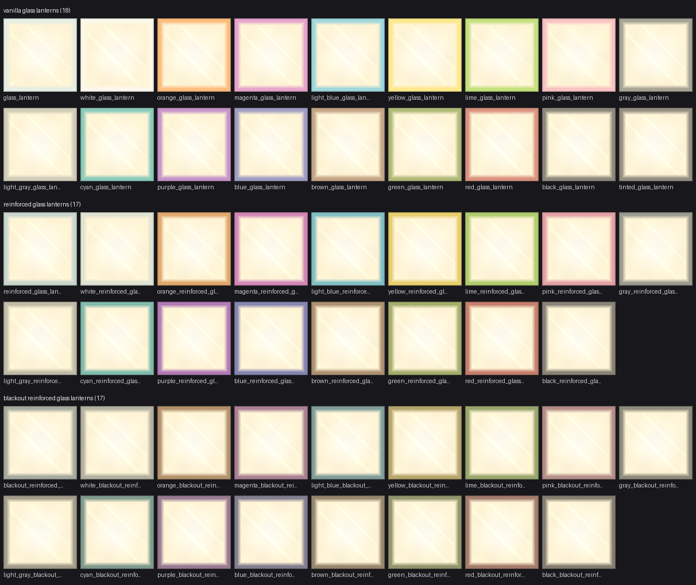
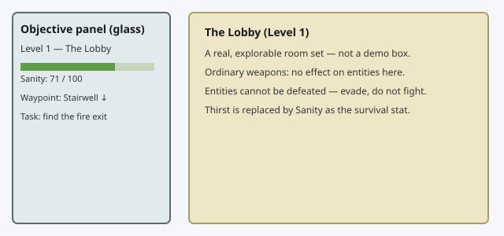
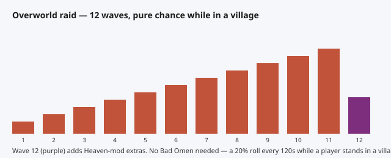
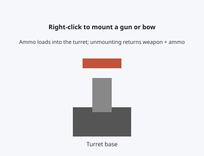
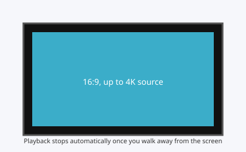
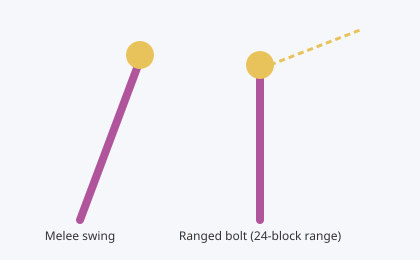
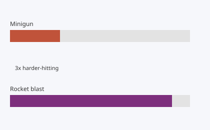
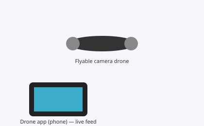
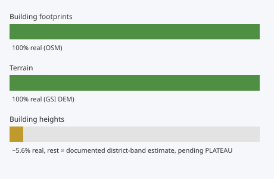

Guía de funciones
Un recorrido, desde el punto de vista del jugador, por las novedades de la V2.2.
Faroles de vidrio (52 tipos)

El MOD de materiales de construcción gana 52 tipos de farol de vidrio. El desglose es: 18 con vidrio de color de vanilla + 17 reforzados + 17 opacos (oscuros).
- Nivel de luz máximo, 15. Medido: su textura emisiva es más brillante que la del panel LED ya existente
- En los grupos de objetos aparece junto a la linterna marina, en la pestaña de bloques funcionales
Backrooms

Interfaz en pantalla
A la izquierda de la pantalla se muestra de forma permanente un panel de objetivos de vidrio. El nivel actual, la cordura y adónde hay que ir a continuación se ven de un vistazo.
Nivel 1, «El vestíbulo»
No es una pequeña sala de muestra, sino un vestíbulo de verdad por el que se puede caminar y explorar. Se entra por la grieta de la Ciudad del End.
La cordura sustituye a la sed
Dentro de las Backrooms, el indicador que hay que gestionar deja de ser la «sed» habitual y pasa a ser la cordura (sanity).
Las criaturas que aparecen dentro de las Backrooms son completamente inmunes a los ataques con armas normales. Además, estas criaturas no se pueden matar. Es un lugar para esquivar y seguir adelante, no para combatir.
Asaltos en la superficie

Hasta ahora, los asaltos a aldeas necesitaban el efecto «Mal presagio»; a partir de la V2.2, basta con estar en una aldea para que se desencadene un asalto por pura probabilidad, sin «Mal presagio».
- Mientras estés en una aldea, cada cierto tiempo hay una probabilidad fija de que se produzca
- Son 12 oleadas en total. En la última se suman enemigos adicionales del MOD del Cielo
Torretas (montar armas de fuego y arcos)

Haz clic derecho sobre una torreta para montar ahí mismo el arma de fuego, el arco o la ballesta que lleves en la mano. El arma montada tiene su propio inventario interno de munición, y al desmontarla se te devuelven el arma y la munición restante tal cual.
Vídeo (compatible con 4K, parada automática)

La resolución admitida en la reproducción de vídeo sube por encima del límite anterior: ahora se puede reproducir hasta 4K. La proporción de la pantalla se mantiene siempre en 16:9.
Si te alejas cierta distancia de la pantalla, la reproducción se detiene automáticamente.
El bastón de Sparxie

Hasta ahora solo atacaba cuerpo a cuerpo; a partir de la V2.2 puede usar tanto el ataque cuerpo a cuerpo como el ataque a distancia. El ataque a distancia dispara un rayo con 24 bloques de alcance.
Ajuste de las armas de fuego

- La potencia del minigun es ahora aproximadamente 3 veces mayor
- La potencia de la explosión del lanzacohetes se ha reforzado notablemente
Los valores de ajuste internos en sí no se publican aquí. Compruébalo con la sensación de uso real.
El dron y la app de dron

Se ha añadido un dron de cámara que se puede pilotar libremente. Desde su app de dron exclusiva (en el teléfono) puedes ver el punto de vista del dron como vídeo en directo en 16:9.
Al soltar los controles se queda flotando en el sitio, a la espera (no está pensado para volver solo hasta ti).
La recreación de Sapporo

Es una dimensión que recrea la ciudad real de Sapporo (Hokkaidō, Japón) a partir de datos geográficos reales. Sin exagerar nada, el desglose honesto es el siguiente.
- Contorno de los edificios (huella): 100 % datos reales (procedente de OSM; antes solo era en torno al 20 %)
- Relieve: 100 % datos reales (procedente del DEM —modelo digital de elevaciones— del Instituto Geográfico de Japón)
- Altura de los edificios: solo en parte son datos reales. Todavía no se han podido obtener los datos de PLATEAU (el modelo 3D de ciudades del Ministerio de Territorio, Infraestructuras, Transporte y Turismo de Japón), así que la mayoría de las alturas son una estimación basada en estadísticas por distrito. En cuanto se puedan conseguir los datos de PLATEAU, está previsto actualizarlas a alturas más precisas
Decimos sin ocultarlo que «la altura de los edificios es una estimación». El contorno y el relieve son datos de medición auténticos, sin más.
Mecánicas que no estaban documentadas
Las 7 que se enumeran aquí son, todas ellas, mecánicas que están realmente dentro del pack de la versión que se distribuye ahora mismo (V2.5.1) y que funcionan de fábrica. No son funciones nuevas que empiecen hoy. En el caso de la gasolina y de la contaminación atmosférica de la central nuclear, su incorporación sí se mencionó en el historial de actualizaciones de la V2.0.0, pero no se llegó a decir que estuvieran activas de fábrica ni que se pudieran desactivar desde la configuración. Las otras 5 (el sistema meteorológico, el multiplicador de precios, el cajero con diamantes, la muerte por sed y el sistema de durabilidad de las máscaras) no han aparecido nunca en el historial de actualizaciones. Esta vez las hemos comprobado una a una contra el código real de los MODs y las hemos recogido aquí todas juntas.
Todas las cifras que aparecen aquí se han comprobado directamente en el código de los MODs de la V2.5.1. Todos los apartados se pueden activar y desactivar, y ajustar en detalle, desde el archivo config del servidor. Si quieres cambiar algún ajuste, habla con el administrador de tu servidor.
Sistema meteorológico (ventisca, tifón, terremoto, tsunami y volcán)
El MOD de supervivencia incluye 5 sistemas de clima y catástrofes. Son la ventisca, el tifón, el terremoto, el tsunami y el volcán, y todos están activos de fábrica (blizzardEnabled / typhoonEnabled / earthquakeEnabled / tsunamiEnabled / volcanoEnabled, todos en config/sorakaze_survival.json).
- La ventisca, el tifón y el tsunami afectan a la visibilidad, al movimiento y a la temperatura corporal (ventisca), a los objetos que salen volando y a la cantidad de lluvia (tifón), y a la inundación tierra adentro (tsunami, que funciona sobre el sistema de agua finita propio del pack); pero ninguno de estos 3 rompe un solo bloque.
- El terremoto, incluso con los ajustes de fábrica, rompe de verdad algunos bloques. Lo único que conmuta
earthquakeDamagesPlayerBuilds(false de fábrica) es «si además se rompen los demás materiales»; no es un ajuste que detenga los daños en sí. Los bloques que figuran en la etiqueta earthquake_fragile —piedra, roca, roca musgosa, pizarra profunda rocosa, arenisca, arenisca roja, tierra, arena, grava, arcilla y demás materiales de construcción de lo más corriente— se rompen al margen de este ajuste. Solo los bloques que tienen entidad de bloque, como los cofres o los hornos, no se rompen jamás, sea cual sea este ajuste. - El volcán excava un cráter de verdad, pero hay 2 filtros independientes que evitan que se lleve por delante las construcciones. Cada vez que se produce un terremoto hay un 5 % de probabilidad (
volcanoEruptionChancePerEarthquake = 0.05) de que entre en erupción: excava de verdad, terreno incluido, un cráter de 6 bloques de radio y 4 bloques de profundidad (volcanoCraterRadiusBlocks/volcanoCraterDepthBlocks) centrado en el punto de la erupción, y de fábrica lo llena de lava (volcanoLavaEnabled = true). Pero antes de eso, si hay aunque sea una sola entidad de bloque a 24 bloques o menos del punto de la erupción, la erupción se cancela entera, sin desplazarse a otro sitio (volcanoVentClearanceBlocks = 24). Y además, si en la zona que se va a excavar hay aunque sea un solo bloque que no esté en la lista de «terreno natural que se puede excavar», se cancela igualmente entera. Las pruebas del propio MOD comprueban esta condición de cancelación con un simple suelo de tablas de madera. En la práctica, lo único que corre peligro real son los edificios que no tengan ninguna entidad de bloque en 24 bloques a la redonda y estén hechos únicamente de materiales naturales como piedra, tierra, arena o grava.
Multiplicador de precios (×10 a ×100)
En 2 MODs, el del Cielo (Sky) y el de Planarcadia, los precios que esta suite de MODs define por su cuenta (quedan fuera los intercambios con aldeanos de vanilla) están inflados al azar entre 10 y 100 veces, artículo por artículo. Está activo de fábrica (priceMultiplierEnabled = true, en config/sorakaze_sky.json y config/sorakaze_planarcadia.json respectivamente).
- El multiplicador de cada artículo se decide una sola vez a partir de la semilla del mundo y ya no cambia. Si compras el mismo artículo 2 veces en el mismo mundo, el multiplicador es el mismo. No es una «cotización» que se mueva según la tienda o el momento.
- Ejemplo: los inmuebles de Singapur del Cielo tienen un precio de catálogo de 1 000 000 a 10 000 000 de esmeraldas, pero con este sistema pasan a costar en la práctica de 10 000 000 a 1 000 000 000 de esmeraldas.
- El mismo código de cálculo del multiplicador está también duplicado en los 4 MODs de armas de fuego, ferrocarril, electricidad y Backrooms (por la decisión de diseño de que ningún MOD haga referencia a otro), pero a fecha de la V2.5.1 no lo invoca ningún precio. En esos 4 MODs, por ahora, este sistema no cambia nada en la práctica.
- Este multiplicador de ×10 a ×100 tiene una excepción. Una parte de los artículos baratos del MOD del Cielo (comida, flechas reales y bloques del Cielo) se sigue comprando y vendiendo por la pantalla de intercambio de vanilla, y esa pantalla no puede recibir más de 1152 esmeraldas de una vez (lo que cabe en 2 ranuras de pago). Si el precio que corresponde al multiplicador sorteado supera esa cifra, el importe que se cobra realmente se queda topado en ese límite: es decir, el multiplicador que acaba aplicándose puede quedar por debajo del sorteado. El equipo y los inmuebles (incluido el ejemplo de Singapur de arriba) se pagan a través del cajero y del libro de cuentas, así que este límite no les afecta.
Cajero con diamantes (saldo en diamantes)
El cajero del MOD de materiales y decoración lleva de fábrica un «saldo en diamantes» aparte del saldo en esmeraldas (atmDiamondBalanceEnabled / atmDiamondExchangeEnabled, ambos true de fábrica, en config/sorakaze_deco.json). Los tipos de cuenta (personal, compartida y especial) son exactamente los mismos que los de la cuenta de esmeraldas ya existente, pero el sistema de intereses es distinto.
- El saldo en diamantes y el de esmeraldas nunca se juntan. El cambio se hace desde la pantalla del cajero, y la tasa (1 diamante = 4 esmeraldas) es un valor fijo basado en datos reales de intercambio de vanilla que no se puede modificar desde el config.
- El saldo en diamantes no genera ningún interés. Es una decisión de diseño deliberada. La cuenta de esmeraldas guarda en sus datos la hora del último cálculo para poder calcular los intereses, pero el formato de datos del saldo en diamantes no incluye siquiera esa hora, así que, aunque alguien quisiera añadirle interés compuesto más adelante, no habría ninguna hora de referencia. Esto sirve para proteger una regla que ya existía en el cajero de esmeraldas: «los intereses se topan justo en 10 000 000 de esmeraldas». Si el saldo en diamantes también generase intereses, ese límite perdería en silencio todo su sentido práctico.
Contaminación atmosférica de la central nuclear (aplicación retroactiva)
El sistema en sí —la central nuclear del MOD de electricidad ensucia el aire de alrededor y, si estás en la zona contaminada, recibes efectos negativos en el orden Lentitud → Debilidad → Veneno— ya se presentó una vez en el historial de actualizaciones de la V2.0.0. Lo que se escribe aquí de nuevo son estos 2 puntos.
- Está activo de fábrica (
pollution.enabled = true, enconfig/sorakaze_power.json). - Se aplica de forma retroactiva. Una central nuclear que estuviera construida y en marcha desde antes de que existiera este sistema empieza a contaminar en el momento mismo en que el pack se actualiza a una versión que lo incluye. No hay periodo de transición ni ningún ajuste que deje fuera solo a las centrales ya existentes.
Si mantienes un purificador de aire en marcha, la zona contaminada está diseñada para volverse segura en unos 60 segundos de fábrica (unos 54 segundos en la medición real). Ni siquiera en el escalón más grave del veneno la salud baja de 1, y si sales de la zona contaminada el efecto se pasa solo en unos 6 segundos de fábrica.
Muerte por sed (hidratación)
El MOD de supervivencia tiene, aparte de la barra de hambre, un indicador de «hidratación», activo de fábrica (hydrationEnabled = true, en config/sorakaze_survival.json). La hidratación llega como máximo a 20 y baja de 1 en 1 cada 90 segundos (1800 ticks) si te quedas quieto, y todavía más deprisa mientras corres o mientras estás en una de las «dimensiones calurosas» del pack.
- Cuando la hidratación llega a 0, empieza el daño en las mismas condiciones que el hambre de vanilla (1 punto cada 4 segundos; en Fácil se detiene a 10 de salud y en Normal a 1 de salud, y en Difícil continúa hasta matarte; en Pacífico la hidratación ni siquiera baja).
- Si la hidratación se mantiene a 0 durante 10 minutos seguidos (
hydrationDehydrationEscalationTicks = 12000), el daño aumenta 0,1 cada 30 segundos, hasta un máximo de 1,4 cada 4 segundos (0,35 por segundo). Además, a partir de ese momento el daño deja de detenerse en 10 o en 1 de salud también en Fácil y en Normal (hydrationDehydrationEscalationIgnoresDifficultyFloor = true). Es decir: en cualquier dificultad que no sea Pacífico, pasar 10 minutos sin beber agua puede llegar a matarte de verdad solo por la sed. - Se recupera bebiendo de una cantimplora o de una botella de agua (+6 de hidratación por uso).
La gasolina de los vehículos
Que el MOD de vehículos pasara a necesitar gasolina ya se presentó en su momento en el historial de actualizaciones de la V2.0.0. Lo que se escribe aquí de nuevo es que se puede activar y desactivar, y qué pasa con los vehículos que ya existían.
- Todos los vehículos, salvo los trenes, consumen gasolina. Está activo de fábrica (
gasoline.enabled = true, enconfig/sorakaze_vehicles.json). Si lo pones en false, se vuelve por completo al comportamiento anterior a este sistema: «combustible infinito». - Los vehículos que ya estuvieran colocados desde antes de que existiera este sistema se heredan tras la actualización con el depósito lleno (
legacyVehicleFillFraction = 1.0). No se quedan inmóviles nada más colocarlos.
Sistema de durabilidad de las máscaras
La máscara de Sparkle y la máscara de Sparxie llevan de fábrica un sistema de durabilidad (maskBreakRevivalEnabled = true, en config/sorakaze_survival.json).
- La durabilidad es de 814 (
maskDurability; el documento de especificación original decía «unos 800», pero el valor implementado es 814). Cuando se agota, la máscara se rompe. - 320 segundos después de romperse (6400 ticks,
maskRevivalCooldownTicks) vuelve a poder usarse. Ahora bien, esta resurrección solo se produce una vez. Si se rompe por segunda vez, esa máscara se acabó ahí. - El registro de que «ya se rompió una vez» queda en la propia máscara y no se borra aunque vuelvas a conectarte, mueras, la saques y la metas en un cofre o se reinicie el servidor. Repararla en un yunque o en una muela tampoco borra ese registro (está bloqueado a propósito).
Este artículo, en sí mismo, no añade ningún sistema nuevo ni cambia ningún valor de fábrica. Solo recoge por escrito, todo junto, lo que ya estaba funcionando, incluida la parte que se había quedado sin documentar. Todas las claves de configuración citadas están en el archivo config/sorakaze_*.json del lado del servidor. Solo el administrador del servidor puede modificarlas.